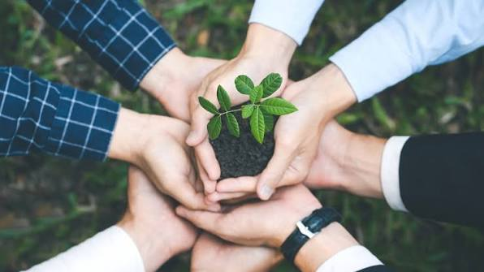
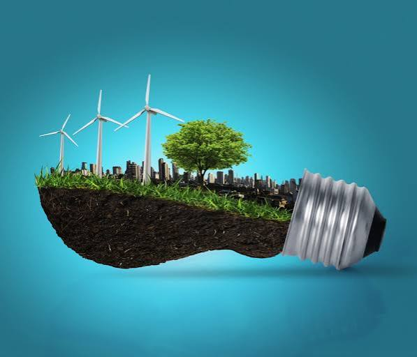
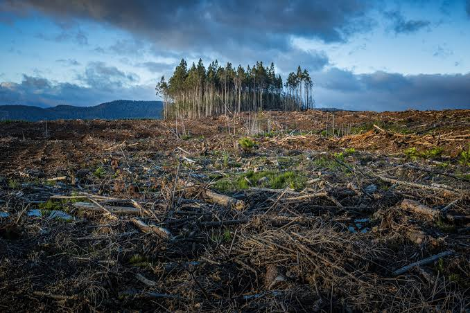

A sustentabilidade no campo busca produzir alimentos sem prejudicar o meio ambiente, preservando os recursos naturais. Com o avanço da tecnologia, a agricultura tornou-se mais moderna, produtiva e eficiente, mas também passou a apresentar novos desafios ambientais e sociais.

O avanço da tecnologia no campo aumenta a produtividade, reduz o tempo de trabalho, economiza água e facilita o plantio e a colheita. Além disso, permite identificar pragas e doenças com mais rapidez e aproveitar melhor os recursos naturais.

Entre as desvantagens estão o alto custo das máquinas e equipamentos, a substituição de trabalhadores por máquinas automatizadas e a dificuldade de acesso à tecnologia para pequenos produtores. Além disso, seu uso inadequado pode causar degradação do solo, poluição da água e impactos ambientais.
